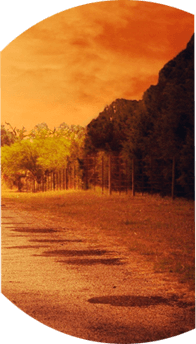
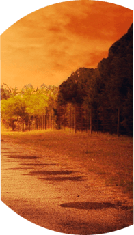

Д
У
Ш
Узнай
Свой тип
Души
миры
Но тело – лишь оболочка,
душа – вот суть личности

 
2

2
Прочитав книгу, вы
получите фундаментальные
знания о мироздании

Большинство религиозных и философских источников, доступных у нас на земле – упоминают многочисленные параллельные миры и существ в них. Мироздание состоит из многих миров, в мирах живут различные существа. Например, есть мир, где живут ангелы. Автором было совершено уникальное открытие, не имеющее аналогов в новейшей истории. Существа из высоких миров рождаются, реинкарнируются и здесь, на земле, в мире людей! Но тело – лишь оболочка, душа – вот суть личности! И личность из иных миров, рождаясь здесь, на земле – не теряет своей внутренней душевной сути, оставаясь человеком лишь телесно. Так, встреченный вами прохожий вполне может оказаться, например, эльфом. Или, кому удобнее воспринять наоборот: вот, скажем, на земле рождается ребенок. У него вполне может быть душа ангела, то есть он и является ангелом, ведь тело – лишь оболочка, не тело определяет личность, а душа. И поэтому у такой личности свои черты, энергетика, восприятие, творческие интересы. И на земле живет немало личностей с самыми разными типами душ. Вы и сами можете оказаться чудесным существом из высоких миров! А книга – поможет раскрыть свою истинную суть! В ней подробно описываются виды существ, типы душ, их признаки и черты. И узнать собственный тип души, это – поистине драгоценное знание! Ведь основные жизненные цели, испытания которые приходят свыше, потенциальные возможности личности – все это будет определяться принадлежностью души к одному из миров. Прочитав книгу, вы получите фундаментальные знания о мироздании. А разница между эльфом в теле человека и, скажем, драконом в теле человека станет для вас такой же очевидной и заметной, как разница в росте или весе.